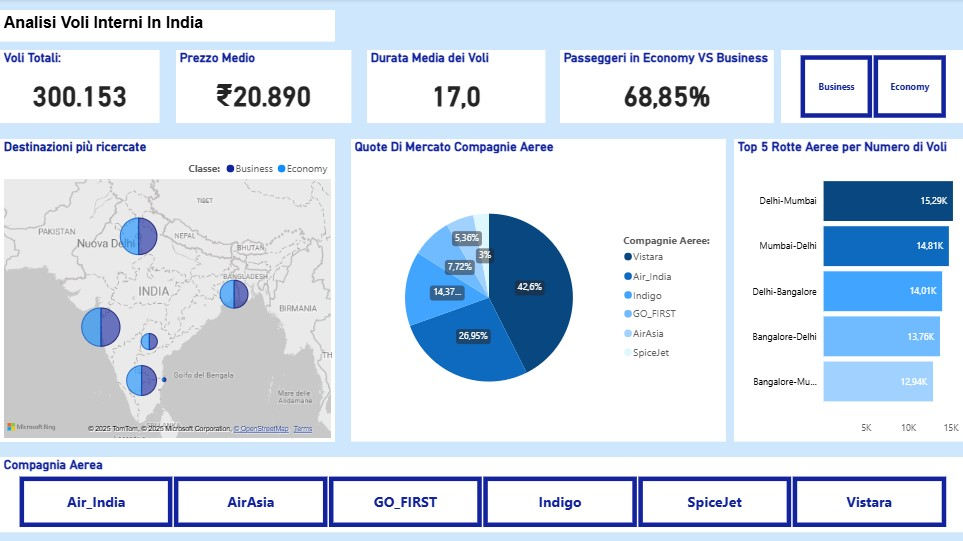

Report, Andamento Prezzi e Fattori di Influenza
Per questo progetto ho utilizzato un database relativo ai voli interni in India, che copre un arco temporale di un anno. L’obiettivo principale dell’analisi è quello di studiare i fattori di influenza chiave all'interno di questo settore. In primo luogo, l’attenzione è rivolta al prezzo medio dei voli e alla durata media delle tratte, due fattori fondamentali sia per i passeggeri che per le compagnie aeree. Successivamente, l’analisi si sofferma sul confronto tra le diverse compagnie aeree e le varie classi di viaggio, con lo scopo di evidenziare eventuali differenze significative in termini di costo e tempi di percorrenza. Un ulteriore aspetto di rilievo è rappresentato dallo studio delle rotte più trafficate, che consente di individuare i collegamenti aerei più utilizzati.
In questa prima pagina del report vengono presentati alcuni indicatori generali relativi al database analizzato. In particolare, troviamo il numero complessivo di voli, il prezzo medio del biglietto e la durata media per volo, quest’ultima fortemente influenzata dalla prevalenza dei collegamenti in classe Economy, che spesso includono tratte con scali intermedi. Dall’analisi emerge che circa il 69% dei passeggeri ha viaggiato in Economy, a conferma di come questa tipologia di servizio rappresenti la scelta più comune e accessibile all’interno del mercato domestico indiano. Attraverso la mappa interattiva e il grafico a barre orizzontali, è possibile osservare la distribuzione del traffico aereo nei principali aeroporti del Paese. Tra questi spiccano nettamente Delhi e Mumbai, che si identificano come i due hub principali. Infine, il grafico a torta illustra le quote di mercato delle diverse compagnie aeree. Grazie al filtro disponibile in alto a destra, è possibile personalizzare la visualizzazione, segmentando le quote in base alla classe di servizio (Business o Economy), ottenendo così una panoramica più dettagliata.
